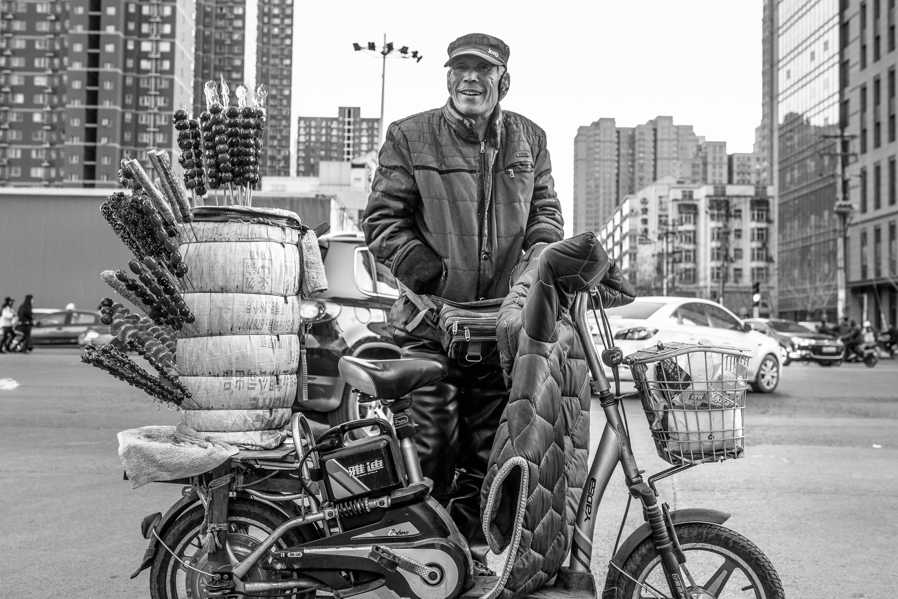
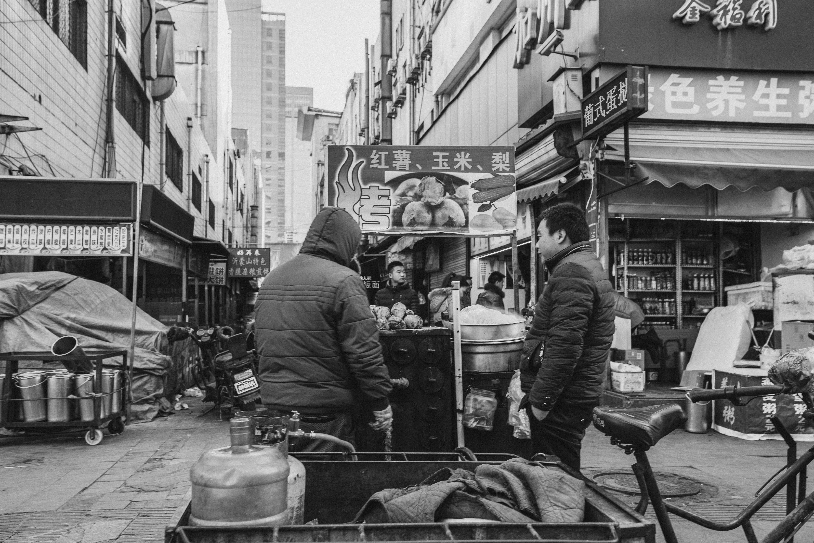

寒假在家闲的无聊，我拿起相机到南三条市场逛了一圈。
石家庄的南三条是21世纪初市政府借鉴浙江义乌小商品市场的成果， 其鼎盛时期曾年销售额过百亿，在小商品市场的国内排行榜上甚至进过前三甲， 而今却快变成停车场了。
我本科在浙江师范读的，浙师大本部位于金华，而义乌就是金华下属的地级市， 且我本科专业是工商管理，离义乌国际商品城就更近了。 大三下学期的暑期实践课就是由班主任叶永玲老师带我们到义乌的主要几个商品市场逛。 到了之后，目之所及并没有我之前想象的热闹景象。 商品是琳琅满目，一类小饰品就可以成一层楼，一种材料就可以成一家店， 但顾客却门可罗雀。 刚过去没多久的淘宝双十一狂欢节一天销售额已过千亿， 在电商与物流的飞速发展面前，义乌小商品市场可谓丢盔卸甲。 更何况偏安一隅的石家庄南三条呢。

